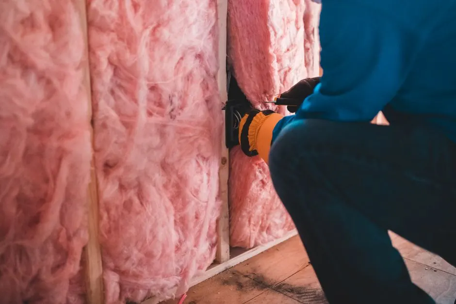

No. Injection foam insulation is pumped into each stud cavity through holes in the exterior wall. We check the walls on the walkthrough before we fill them, because the fill runs from outside without opening the inside wall. That is why it is not a DIY job.
Injection Foam Insulation Houston
Injection foam fills empty 2x4 walls from outside through small holes in the exterior wall. You can use your rooms while we work. We check your walls on a free walkthrough.
Wall Injection Foam Houston
Injection foam fills an empty 2x4 wall without removing drywall. If a room stays hot in the afternoon sun while the rest of the house cools, we check for an empty wall cavity on the walkthrough. We see this in a 1960s ranch in Spring Branch West with empty wall cavities.
Can you add insulation to existing walls without removing drywall?
Yes. We drill holes in the exterior wall, inject foam into each wall cavity, and seal each hole. On brick, we plug each hole with mortar that matches the mortar around it. On siding, we put the siding piece back in place. Your drywall stays in place.
Injection Foam Wall Insulation Houston
Injection foam is for finished walls. A finished wall is a wall that is already built, with drywall on the inside and siding or brick on the outside and a closed cavity between the studs. Spray foam needs open framing to reach that cavity, so it cannot fill a finished wall. Injection foam fills the closed cavity from outside, and the wall is never opened from the inside.
Hot West-Facing Rooms and Empty Walls
In Houston, a west-facing room gets direct sun late in the day. That sun heats the west wall, and an empty cavity lets the heat pass through the wall into the room. The room stays hot well into the evening. On the walkthrough, we check the attic first. If the attic insulation is thin, we fix the attic first. If the attic insulation is not thin and the inside face of that wall still feels warm, the empty cavity is the likely cause. We fill that cavity with injection foam.

What Injection Foam Is and How It Fills a Closed Wall
Injection foam is a liquid resin. Polyurethane injection is a different foam product. We pump the liquid resin into a closed wall cavity through holes drilled in the exterior wall. It fills the closed wall cavity, firms up, and seals air leaks as it fills.
Empty Wall Cavities in Houston Summers
The temperature reaches 90°F or higher on more than 100 days a year. An empty wall cavity lets heat pass into the room, and the AC works harder to hold the set temperature. It matters most in homes built before 2009, when wall R-13 became required. A wall that old can have no insulation at all.
Signs Your Walls May Be Empty
A bedroom that stays hot while the rest of the home cools often has an empty wall cavity. A room on the west side is the first place to look. The inside face of an exterior wall feels warm on a hot afternoon. The wall sounds hollow when you knock on it. There is a draft near an outlet or a light switch.
How do I know if my walls are insulated?
We check this on a free walkthrough and show you what we find before we quote a price.
Injection Spray Foam Insulation Houston: A Side-by-Side Look
| Type | Best for | How it goes in | R-value per inch | Air seal |
|---|---|---|---|---|
| Injection foam | Finished homes with empty wall cavities | Pumped through exterior holes | R-4.32 at 75 degrees Fahrenheit | Yes |
| Spray foam | Open framing and new builds | Sprayed onto open framing | Open cell R-3.6 per inch, closed cell R-6.5 per inch | Yes |
| Blown-in fiberglass | Attic floors | Blown by hose onto the attic floor | About R-2.5 | No |
Spray foam and blown-in fiberglass R-values come from the U.S. Department of Energy. The injection foam R-value comes from the Tripolymer Inc. product specification tested to ASTM C-518.
Wall Insulation Injection Houston: Types for Finished Walls
For a finished wall, we fill each stud cavity from outside. On brick veneer, we drill through the mortar joints, not through the brick. On vinyl siding, we lift a strip, drill behind it, and put the strip back after the fill. A stud divides one cavity from the next, so foam pumped into one cavity cannot reach the next. That is why each cavity is filled on its own.
Less Heat Through the Walls
Per the Tripolymer product specification, injection foam insulation rates R-4.32 per inch at 75 degrees Fahrenheit, so less heat moves through the exterior wall. A room that was hot before stays closer to the temperature of the rest of the home. The AC does not change, but the wall passes less heat, so the room holds its temperature better through the afternoon.
Install Day: What Happens From Outside
On average, a Houston home takes one day, and a bigger home and a home with two floors can take two or three days. We work from outside, so you can stay home while we work.
We drill the holes for each stud cavity from outside. On vinyl siding, we lift a strip to drill behind it.
Then, we pump injection foam insulation into each stud cavity and patch the holes after the fill.
Patch, Paint, and Mess After the Job
On brick veneer, we patch the holes in the mortar joints with matching mortar. On vinyl siding, we reattach the lifted strip. If the vinyl siding is painted, the lifted strip may need a fresh coat of paint. We tell you on the walkthrough whether that coat is included in your written estimate.
Injection Foam Insulation Cost Houston
Injection foam insulation costs $1.50 to $4.20 per square foot of wall area. We measure your walls on a free walkthrough and give you the price in writing.
The table below shows example totals for three wall areas.
| Example | Wall area | Estimated cost |
|---|---|---|
| One room | 300 sq ft of wall | $450 to $1,260 |
| Home with one floor | 1,200 sq ft of wall | $1,800 to $5,040 |
| Home with two floors | 2,000 sq ft of wall | $3,000 to $8,400 |
What R-Value Means and Why It Varies
At a mean temperature of 75 degrees Fahrenheit, Tripolymer Inc. lists R-4.32 per inch in its product specification tested to ASTM C-518. That is about R-15 in a 2x4 wall. R-value measures how well a material resists heat flow, and a higher number means less heat gets through the wall. To get the R-value of the filled wall, multiply that figure by the depth of the cavity in inches. Published R-values differ because the test mean temperature varies. Compare R-values only at the same temperature.
Safety and When You Can Use the Room Again
Tripolymer Inc.'s product specification lists a flame spread index of 5 and a smoke developed index of 0 under ASTM E84. The foam is nontoxic even during application and gives off no strong odor as it cures. The foam firms in minutes and cures after that. Before work starts, we give you the cure time in writing, so you know when you can use the room again.
What Injection Foam Insulation Cannot Fix
Injection foam is not the right fix for every wall in a Houston home. If the insulation inside the wall is wet, we skip that wall. If the stud cavity is already full, there is nowhere for the foam to go. If the wall is open, injection foam cannot fill it, because the foam needs a closed cavity to hold it. Injection foam will not cool a room made hot by duct leaks or a weak AC unit. An HVAC contractor fixes the ducts or the AC. If the wall has knob and tube wiring, we do not drill until an electrician has checked whether it is live. If it is live, we do not inject foam until it is deactivated or replaced. If we find asbestos, live wires, or a gas line, we stop work and tell you to have that hazard checked before we drill. On the walkthrough, we tell you which fix is right for your home.
Injection Foam Insulation FAQ
On average, a Houston home takes one day. A larger home can take two or three days, and so can homes with two floors. We work from outside, so the job does not disturb the inside. We will confirm your schedule on the walkthrough.
No. Injection foam insulation fills the stud cavity from outside, and your drywall stays in place. On vinyl siding, we lift a strip to drill behind it and put the strip back after the fill. Before we leave, we pick up dust and foam from the work area.
Yes, if your walls are empty. Injection foam insulation costs $1.50 to $4.20 per square foot of wall area. Empty walls let Houston heat pass through into the room, so filling them means the AC works less hard to hold the set temperature.
Yes. We drill holes for each stud cavity through the mortar joints, not through the brick itself, so the brick stays intact. Each hole is 5/8 inch wide. After the fill, we seal each hole with mortar in a matching color.
Injection Foam Insulation Contractor Houston
Call (832) 291-2738, Monday to Saturday, 8am to 6pm, to book a free walkthrough for injection foam insulation. We call you back on the day you call, and most jobs start within the same week. Our address is 9310 Central Park Vista Ln, Houston, TX 77080.
Call anytime(832) 291-2738
Office hoursMon–Sat 8am–6pm